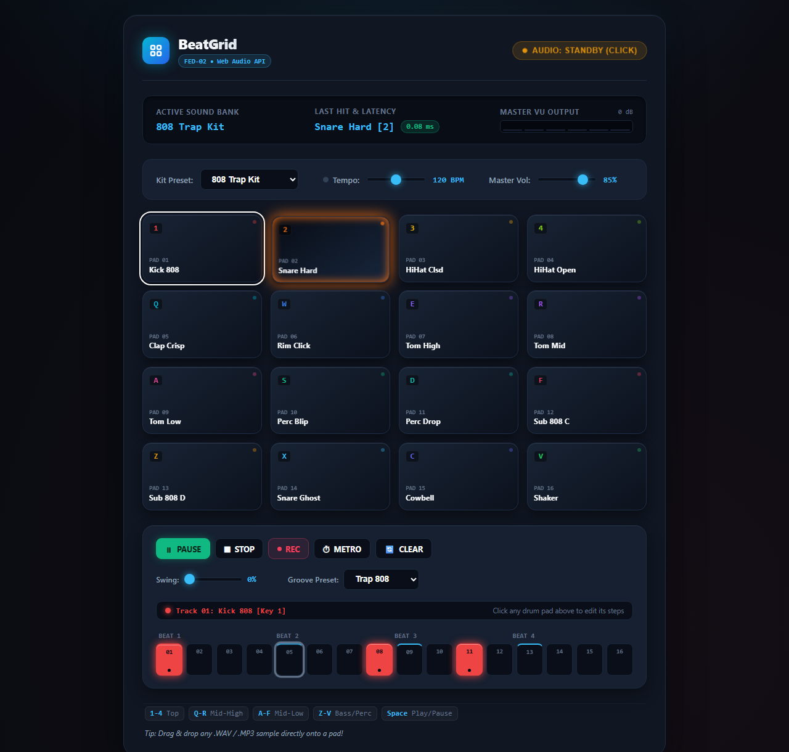

AUDIO DSP // BROWSER APPLICATION
BeatGrid — 16-Pad Sampler & Looper
Sample-accurate 16-pad drum machine and polyphonic step sequencer built for the modern browser. Features dual-timer lookahead scheduler, Roger Linn swing algorithms, and procedural drum synthesis via OfflineAudioContext with zero audio-visual latency.
Web Audio API
Lookahead Scheduler
Canvas 2D
Vanilla JS